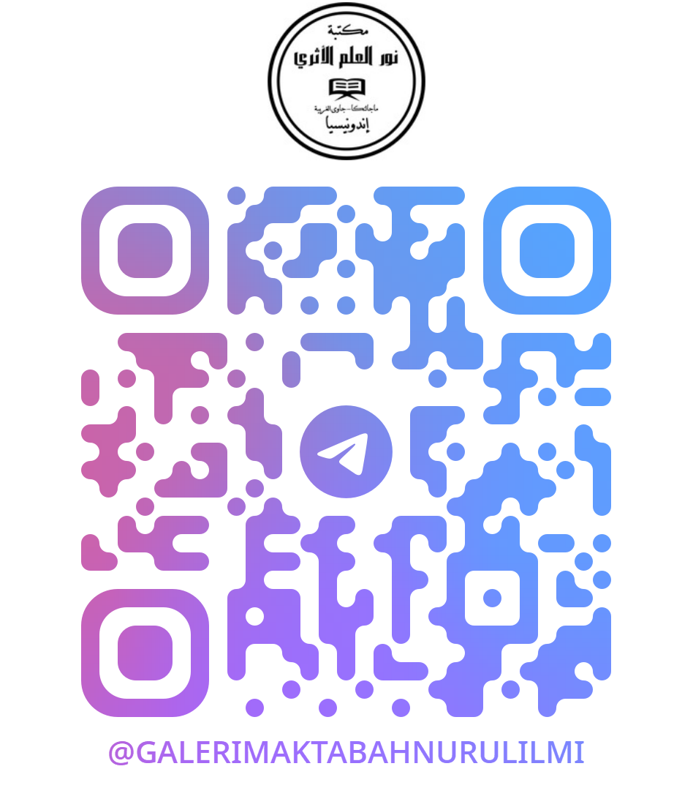

Dipinjam Ustadz
| Nama Ustadz | Tgl Pinjam | Status | Tgl Kembali | Nomor Urut Kitab | Judul Kitab | Jilid Berapa | Etalase / Rak | |
|---|---|---|---|---|---|---|---|---|
Kitab Yang Tidak Ada di Rak
| Keterangan | Nomor Urut Kitab | Etalase / Rak | Jilid | Judul Kitab |
|---|
CARI KITAB MAKTABAH NURUL ILMI 2026
SEARCH BOOKS NURUL ILMI LIBRARY
Etalase
( الرف )
Bidang
( الفن )
Cetakan
( الطبعة )
Penulis
( المؤلف )
Buku
( الكتب )
Informasi Maktabah
Maktabah ini merupakan himpunan kitab-kitab pilihan yang disusun dengan penuh amanah, bertujuan menjaga dan menyebarkan ilmu yang bermanfaat.
Semoga setiap halaman menjadi sumber keberkahan dan cahaya dalam perjalanan menuntut ilmu.
PERHATIAN:
Harap Mengembalikan Kitab Yang Telah Diambil TEPAT pada No. Urut Posisi Kitabnya!
Perhatikan Nama Kitab Sebelumnya, Dan Nama Kitab Sesudah dari Kitab Yang Diambil, Jangan Mengembalikan Tidak PADA POSISI URUT KITAB!
Selain Ustadz DILARANG meminjam buku/kitab, atau membawa keluar dari Maktabah.
Terima kasih kepada para pengunjung yang senantiasa menjaga adab di maktabah ini.
Semoga ilmu yang tersimpan di sini menjadi amal jariyah bagi para penyusun dan pengunjungnya.
Jazakumullahu Khairan kepada seluruh pihak yang telah berkontribusi dalam perumusan, penataan, dan penyusunan katalog digital ini.
Kunjungi Fan Page Galeri Maktabah Nurul Ilmi
Ikuti Link Telegram di bawah ini:
Buka Telegram
Cari Kitab
Cari Berdasarkan Penulis
Urutan Berdasarkan
Cari Berdasarkan Bidang
Cari Berdasarkan Cetakan
Urutan Berdasarkan
Etalase Maktabah Nurul Ilmi
Etalase 5
- FAWAID CAMPUR
- ILMU ALAT
- KUMPULAN KUTAIB
- BUKU SYUBHAT
Etalase 4
- FIQIH
- FATWA ULAMA
Etalase 3
- HADIS, TAKHRIJ & KRITIK HADIS
- BIOGRAFI & SEJARAH
Etalase 2
- SYARAH HADITS
- MATAN HADIST, MAKNA DAN FIHRISNYA
Etalase 1
- TAFSIR AL-QURAN
- AKIDAH & MANHAJ